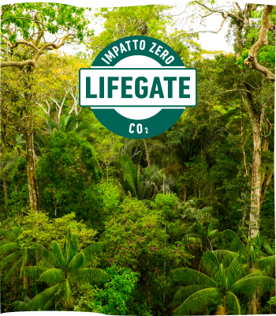
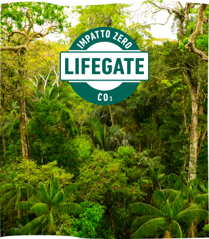
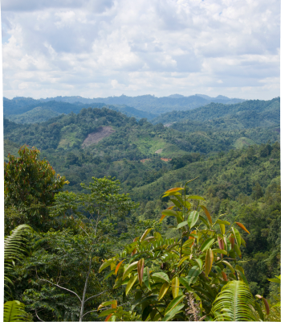
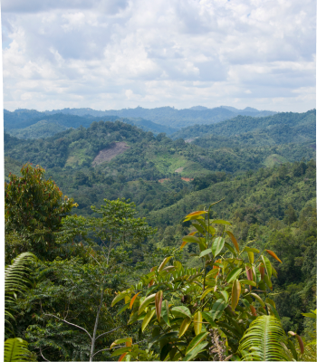

Cos’è il riciclo chimico
Con varie tecnologie, il riciclo chimico "rompe" le molecole che compongono i polimeri delle plastiche e le fa tornare "mattoncini" di partenza per costituire nuove materie prime.
Così è possibile produrre nuovi polimeri e reiterare il processo infinite volte.
Così è possibile produrre nuovi polimeri e reiterare il processo infinite volte.
 

 
